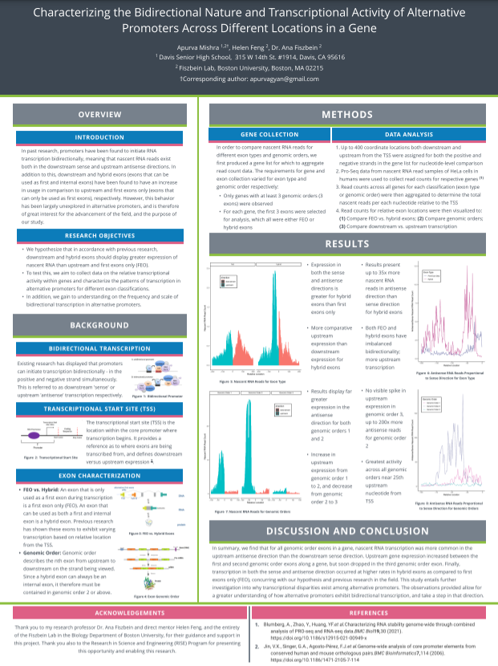

# Apurva Mishra - Additional Information
## Overview of Additional Information
The following page contains the additional information for the Commmon Application that I would like to share. This includes:
1. The abstract for a published, peer-reviewed research publication
2. The abstract for a research paper in the process of review for publication
3. My research project and poster from the Research in Science and Engineering (RISE) Program at Boston University
4. The abstract for a peer-reviewed paper pending publication
5. The abstract for my ongoing research at a Topological Molecular Biology Laboratory in UC Davis, which was submitted and won regionally at the Sacramento Science Fair
I am also due to publish research from my internship at a topological molecular biology laboratory at UC Davis. The research for the second abstract and third abstracts, and my UC Davis internship research, would have been published earlier but was delayed due to COVID-19.
## Publication 1
**Early detection of crop fungal pathogens for disease management using DNA and Nanotechnology based diagnostics**
Rizwana Rehsawla, Apurva Mishra*, Rajinder S. Beniwal1, Neelam R. Yadav** and R.C. Yadav
_Department of Molecular Biology, Biotechnology and Bioinformatics, 1Department of Plant Pathology, CCS Haryana Agricultural University, Hisar-125004, INDIA_
_*Present Address- Topological Molecular Biology Laboratory, Department of Molecular and Cellular Biology, University of California, Davis, California 95616, USA_
_**Corresponding Author; Email: nryadav58@gmail.com_
**Abstract**
Virulent fungal plant pathogens are a serious threat to crop productivity and are considered a major limitation to food security worldwide. To meet these challenges, pathogen detection is crucial for taking appropriate measures to curb yield losses. Disease diagnosis at an early stage is one of the best strategies for crop protection. Earlier, traditional methods were used to diagnose and manage the fungal diseases, which included visual scouting of the disease symptoms and spray of fungicides. The utility of immunoassays for early detection and precise identity has been appreciably stepped forward following the improvement of enzyme-connected immunosorbent assay (ELISA) and monoclonal antibodies. Nucleic acid-based diagnostic techniques have turn out to be the preferred type, because of their greater speed, specificity, sensitivity, reliability, and reproducibility. The biosensor eliminates the need of sample preparation and can be used for on-site detection of fungal pathogens at latent infection stages so that preventive measures can be taken. Currently, multiple human and animal diseases have been detected with the help of biosensors. However, reports on plant pathogen detection using biosensors are still in its infancy. Despite the many applications of antibodies, there are also multiple drawbacks, including high cost, low physical and chemical stability, and the ethical issues associated with their use. Now, DNA based biosensors are gaining popularity because of their sensitive and precise detection of DNA target sequences. Immunological and DNA based techniques combined with nanotechnology offer highly sensitive and selective gel-free detection methods, and the lab-on-chip (LOC) feature of biosensors make them a very reliable tool in crop protection.
## Publication 2
**Promoter selection for optimized CRISPR-Cas-mediated genome editing in plants**
**Fronters in Genome Editing (to be published}**
Rita Sharma (1), Apurva Mishra (2), Archit Gupta (1) and Farhanur Rahman (1)
_1 Department of Biological Sciences, Birla Institute of Technology and Science (BITS), Pilani, Rajasthan, India_
_2 Department of Microbiology and Molecular Genetics, Arsuaga-Vazquez Lab, UC Davis, One Shields Ave, Davis, CA-95616 USA, apurvagyan@gmail.com_
**Abstract**
CRISPR/Cas mediated editing has revolutionized the way we engineer plant genomes. Many studies have been carried out in the past few years towards optimization of the genome editing constructs. The choice of promoters used to drive gRNA and cas9 expression is critical to achieve high editing efficiency. We have collated the information about different types of promoters used for genome editing in plants and their impact on editing efficiency. While some of the important considerations while opting for a particular promoter depend on 1) Nature of the gene targeted, 2) Host organism, 3) Single or multiplex editing, 4) Size of construct, 5) Mode of transformation, and 6) Expected impact of editing on plant morphology and survival; the key benefits and limitations associated with different types of promoters used for engineering plant genomes have been elaborated.
## Publication 3
**Characterizing the Bidirectional Nature and Transcriptional Activity of Alternative Promoters Across Different Locations in a Gene**
Apurva Mishra 1,2* , Helen Feng 2 , Dr. Ana Fiszbein 2
_1 Davis Senior High School, 315 W 14th St. #1914, Davis, CA 95616_
_2 Fiszbein Lab, Boston University, Boston, MA 02215_
_*Corresponding author: apurvagyan@gmail.com_
In past research, promoters have been found to initiate RNA transcription bidirectionally, meaning that nascent RNA reads exist both in the downstream sense and upstream antisense directions. In addition to this, downstream and hybrid exons (exons that can be used as first and internal exons) have been found to have an increase in usage in comparison to upstream and first exons only (exons that can only be used as first exons), respectively. However, this behavior has been largely unexplored in alternative promoters, and is therefore of great interest for the advancement of the field, and the purpose of our study.
Research Poster for Research in Science and Engineering (RISE) Program at Boston University:

A pdf version of my RISE Research Poster to open and reference can be found here: PDF.
## Publication 4
**Genomic region analysis and genome editing for grain quality improvement in cereals**
**in book titled Principles and Practices of OMICs and Genome Editing for crop improvement.**
Sumit Jangra1, 2*, Priti1, 2, Vrantika Chaudhary2, Apurva Mishra3, Ram C. Yadav2, and Neelam R. Yadav2
_1 Advanced Centre for Plant Virology, Division of Plant Pathology, ICAR-Indian Agricultural Research Institute, New Delhi-110012 India, sumit.jangra712@gmail.com (SJ), preetikapoor01@gmail.com (P)_
_2 Department of Molecular Biology, Biotechnology, and Bioinformatics, CCS Haryana Agricultural University, Hisar-125004 India, vrantika@gmail.com (VC), rcyadavbiotech@yahoo.com (RCY), nryadav58@gmail.com (NRY)_
_3 Department of Microbiology and Molecular Genetics, Arsuaga-Vazquez Lab, UC Davis, One Shields Ave, Davis, CA-95616 USA, apurvagyan@gmail.com_
_*Corresponding author Email: sumit.jangra712@gmail.com_
**Abstract**
Nutritional stress is affecting over two billion people worldwide. As the Mmajority of cereals we consume in our daily routine are deficient in micronutrients. To overcome this, researchers should emphasize grain quality improvement of cereals. Identification of genomic regions/ quantitative trait loci (QTLs) for and their successful introgression in elite cultivars through marker-assisted breeding (MAB) has been widely used by researchers to develop nutrient-rich varieties. Further, the advent of genome editing (GE) has revolutionized crop improvement. Unprecedented opportunities are offered by GE for specific and speedy improvement of crop plants. GE has also been used in cereals for improvement of various quality traits, however, recently the focus has been towards grain quality improvement. GE has been utilized to create specific mutations in the target gene or regulatory region to generate allelic variations which can be utilized for nutrient quality improvement. This chapter deals with various advancements made in cereal grain quality improvement using the identified QTLs and GE to attain nutrient security. In addition, it also highlights the merits and demerits of the different GE tools and the regulatory issues associated with the commercialization of genome-edited crop plants.
## Regional Sacramento STEM Science Fair and California State Science and Engineering Fair (CSEF)
The following is the abstract submission for the regional and state level science fair competitions. I placed 2nd at the regional fair, and therefore qualified and participated in the state science fair.
**Abstract**
The SARS-CoV-2 virus responsible for the COVID-19 pandemic has caused over 3.4 million deaths worldwide. In order to infect human cells, first the virus latches a spike glycoprotein (the S protein) on its surface to the ACE2 receptor, a protein on the surface of human epithelial cells. The S protein is therefore an important region of interest for research into preventing viral infection. Current research lacks definitive understanding of the characteristics of the S protein of SARS-CoV-2 that are most optimal for binding to the ACE2 protein receptor within humans. The purpose of this project is to create a machine learning model that can accurately distinguish the most desirable biochemical properties for such a protein to easily bind to virus entry receptors like the ACE2 receptor. Identification of optimal characteristics for binding allows for further understanding the binding mechanism of viruses like SARS-CoV-2. Using homology-based modelling to produce the data required for the project, biochemical property data is produced on characteristics such as hydrophobicity and aromaticity when the S protein is mutated at several different locations known to be influential for its binding ability. The data produced is used to train an effective machine learning model that predicts the binding affinity of any strain of the SARS-CoV-2 virus to the ACE2 receptor from only its amino acid sequence. Our model can thus be applied to various other infectious diseases with similar ligand-receptor interactions to predict new strains and develop vaccines for those strains before they appear.
## Thank you for your time and consideration!